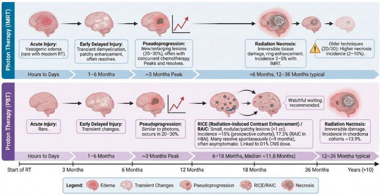
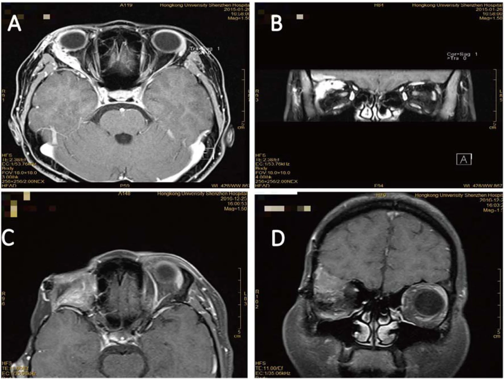
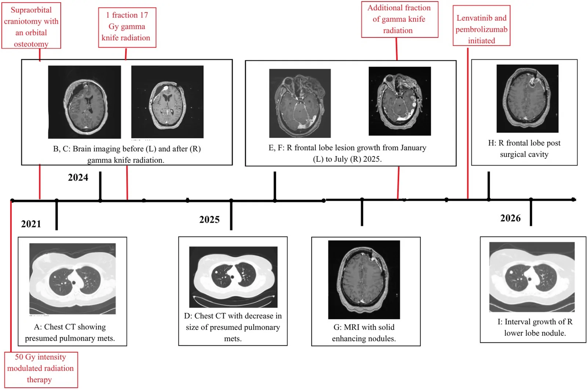
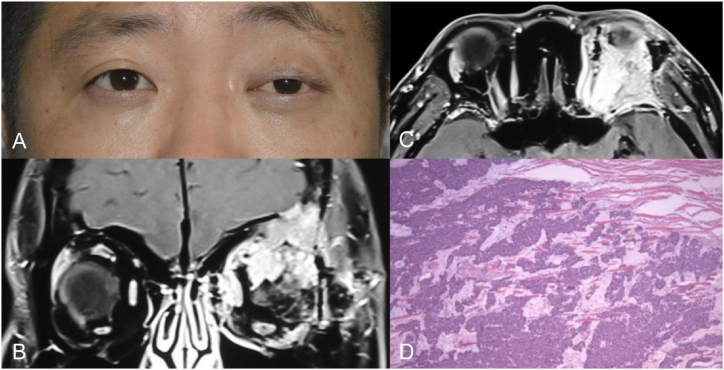
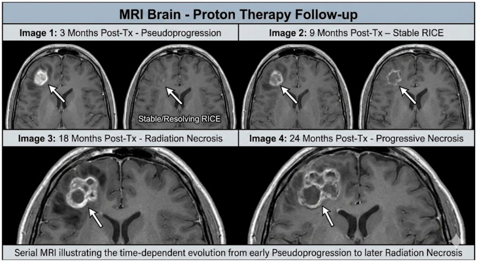
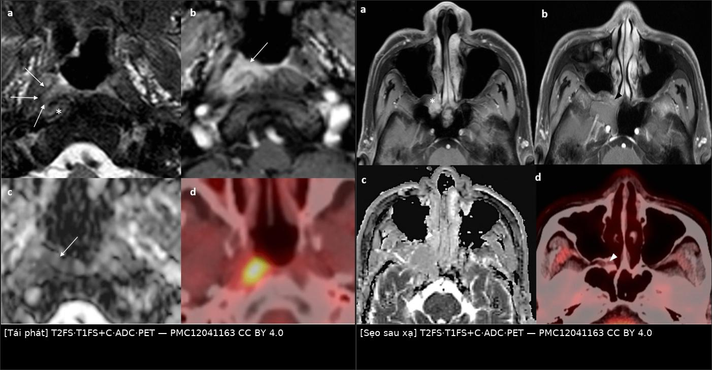

3233 — Theo dõi ACC tuyến lệ sau xạ: tái phát vs thay đổi do xạ / Post-radiation surveillance of lacrimal gland ACC
Tags: pattern:tai-phat-sau-xa pattern:hoai-tu-xa pattern:xam-lan-than-kinh pattern:xam-lan-mang-nao pattern:di-lan-xuong vung:mat vung:hoc-mat protocol:MRI-hoc-mat protocol:T1-fat-sat protocol:DWI-ADC protocol:FDG-PET score:ADC-cutoff incidentaloma:khong
Mức chắc chắn (certainty): tổng hợp y văn (literature synthesis) — dựng từ tổng quan 89 bài/806 ca ACC tuyến lệ (Indian J Ophthalmol 2025, PMC12507167), meta 30 nghiên cứu/585 ca về xạ hậu phẫu (PMC13627049), loạt 6 ca xạ điều biến 66–70 Gy (PMC13627049), 102 ca ACC tuyến nước bọt có tái phát muộn (PMC13270494), 37 ca/74 nốt di căn phổi (PMC13696240), cùng các tổng quan về thay đổi sau xạ ở nền sọ (PMC13115542), đọc hình sau xạ vùng đầu–cổ (PMC12041163), độc tính mắt do xạ (PMC12384690) và RION (PMC13742046). Nhóm không có bệnh nhân của mình; số nào chưa kiểm chứng ghi "chưa rõ". Không ghi tên tác giả — attribution dùng tạp chí + năm + PMCID.
Câu chốt: sau xạ trị ACC tuyến lệ, mọi mô ngấm thuốc mới không phải là tái phát — nhưng mọi tái phát đều bắt đầu bằng mô ngấm thuốc mới. Bốn con số phải thuộc: (a) tái phát tại chỗ 31,1% (213/685), xuất hiện trung bình 35,2 tháng sau điều trị, dao động 4–168 tháng — nghĩa là tới 14 năm và không được "xuất viện" ở mốc 5 năm (PMC12507167); (b) di căn xa 30,9% (196/634), trung bình 39,6 tháng (1–180), hay gặp phổi 40,8% – não 25% – xương 22,9% (PMC12507167), và 29% di căn xa của ACC tuyến nước bọt xuất hiện sau 5 năm (PMC13270494); (c) trên đầu–cổ, ADC < 887 × 10⁻⁶ mm²/s** tách mô xơ/viêm sau xạ khỏi u còn sống với **Se 87,2% – Sp 94,1% – AUC 0,967**, còn **FDG-PET có NPV 95%**, với **PET âm ở mốc 6 tháng** là mốc loại trừ đáng tin (PMC12041163); **(d)** thay đổi do xạ đi theo **dòng thời gian cố định**: cấp trong **giờ–ngày**, sớm muộn **1–6 tháng**, **pseudoprogression đỉnh ~3 tháng (20–30%)**, **hoại tử xạ > 6 tháng, điển hình 12–36 tháng (PMC13115542). Bẫy chết người: di căn phổi của ACC mọc cực chậm — thời gian nhân đôi 86–1.064 ngày, trung bình 393 ngày (PMC13696240), nên "nốt phổi to hơn 1 mm" chưa chắc là thất bại điều trị, và sinh thiết sâu vùng hoại tử xạ cạnh động mạch cảnh có thể gây chảy máu không cầm được (PMC12041163).
1. Tổng quan bệnh học – cơ chế hình ảnh (TẠI SAO)
1.1 Vì sao ACC tuyến lệ tái phát muộn và tái phát "không theo hình khối"
- Dịch tễ: ACC là ung thư biểu mô tuyến lệ hay gặp nhất, chiếm 1,6% u hốc mắt và 13,4% ung thư tuyến lệ (PMC12507167). Đặc điểm sinh học: phát triển chậm, xâm lấn quanh thần kinh (perineural invasion), phá xương và tái phát nhiều năm sau điều trị.
- Vì sao tái phát muộn: ACC có phân số tăng sinh thấp (ít tế bào ở pha S) nên thời gian nhân đôi dài; tổn thương vi thể lan dọc bao thần kinh và màng xương vượt xa bờ khối thấy trên hình. Vì vậy sau mổ "sạch đại thể", tế bào còn lại có thể mất vài năm mới đủ lớn để thấy trên MRI — đúng với phân bố 4–168 tháng của loạt 685 ca (PMC12507167).
- Vì sao tái phát "không theo hình khối": ACC lan theo dây thần kinh V1/V2 → khe ổ mắt trên → xoang hang, theo màng não và theo xương hốc mắt. Trên hình, biểu hiện có thể chỉ là dày dây thần kinh, ngấm thuốc màng não, dày màng xương hoặc một dải mô mảnh ở đỉnh hốc mắt — không phải một khối tròn dễ nhận.
- Hệ quả lâm sàng: loạt 39 ca ACC có MRI–mổ cho thấy nhóm phải múc nội nhãn có khối 3,8 cm so với 2,9 cm ở nhóm giữ mắt, bờ sau cách khe ổ mắt trên 7,5 mm so với 15 mm, kèm vượt đường giữa, xâm lấn cơ ngoài nhãn cầu, xoang hang (PMC13604454). Nghĩa là khoảng cách tới đỉnh hốc mắt là biến quan trọng hơn "khối to hay nhỏ".
1.2 Vì sao sau xạ lại có "mô mới ngấm thuốc" — vật lý và mô bệnh
Bốn cơ chế, cùng một triệu chứng hình ảnh (ngấm thuốc), khác nhau ở thời điểm và vi cấu trúc:
- Phù và rối loạn hàng rào mạch–mô (giờ đến ngày): xạ gây chết tế bào nội mô → thoát huyết tương → T2 tăng tín hiệu, ngấm thuốc nhẹ, không có khối. Đây là lý do chụp MRI quá sớm sau xạ rất dễ "thấy u".
- Viêm/demyelination sớm muộn (1–6 tháng): tổn thương myelin và phù gian bào → T2 sáng, ngấm thuốc thoáng qua, thường giảm dần nếu chụp lại.
- Pseudoprogression (đỉnh ~3 tháng, 20–30%): mô hạt non và phản ứng viêm ngấm thuốc mạnh hơn u thật, có thể to lên rồi tự thoái triển. Trên proton, RICE (radiation-induced contrast enhancement) gặp 15% trong đoàn hệ tiền cứu, 17,3% ở nhóm đầu–cổ, trung vị 11,8 tháng, đa số không triệu chứng và tự thoái triển < 9 tháng (PMC13115542).
- Hoại tử xạ và xơ hóa (> 6 tháng, điển hình 12–36 tháng): hoại tử trung tâm không ngấm, viền xơ ngấm dày; xơ trưởng thành T2 tối, không ngấm vì collagen làm T2 ngắn và mật độ tế bào thấp (PMC13115542).
Nguyên tắc vật lý dùng chung: nước ngoài bào nhiều → T2 sáng + ADC cao; tế bào đặc hoặc xơ dày → T2 tối + ADC thấp; hoại tử/dịch → T2 sáng + ADC cao, không "hạn chế khuếch tán"; mô hạt non → ngấm mạnh nhưng ADC không thấp bằng u; máu/xơ canxi → T2 tối. Vì vậy "ngấm thuốc" một mình không phân biệt được gì — phải đọc cặp T2 ↔ ADC ↔ hình thái ↔ thời gian.
1.3 Ngưỡng định lượng nằm lòng
| Chỉ số | Ngưỡng / giá trị | Nguồn |
|---|---|---|
| Tái phát tại chỗ ACC tuyến lệ | 31,1% (213/685 ca) | PMC12507167 |
| Thời gian tái phát | trung bình 35,2 tháng, 4–168 tháng | PMC12507167 |
| Di căn xa | 30,9% (196/634); 39,6 ± 39,6 tháng (1–180) | PMC12507167 |
| Vị trí di căn | phổi 40,8%, não 25%, xương 22,9% | PMC12507167 |
| Tử vong / sống không bệnh | 32,6% / 61,5%; sống toàn bộ 67,6% | PMC12507167 |
| Xâm lấn quanh thần kinh | tái phát 53,4%, di căn 36,9%, tử vong 23,3% | PMC12507167 |
| Phẫu thuật đơn thuần vs phẫu + xạ | sống 5 năm 50% vs 67%; tái phát 63% vs 41% | PMC13627049 (dẫn meta Yan) |
| Liều xạ hậu phẫu | 60–65 Gy / 30–33 phân liều (IMRT/IMPT); loạt VMAT/TOMO 66–70 Gy | PMC12833162, PMC13627049 |
| Proton giữ mắt (18 ca) | tái phát tại chỗ 22%, tử vong do di căn 17% | PMC12507167 |
| Tái phát muộn sau 5 năm | 29% di căn xa của ACC tuyến nước bọt | PMC13270494 |
| Thời gian nhân đôi di căn phổi | 86–1.064 ngày, trung bình 393 ngày | PMC13696240 |
| ADC tách sẹo/viêm vs u sống (đầu–cổ) | < 887 × 10⁻⁶ mm²/s — Se 87,2%, Sp 94,1%, AUC 0,967 | PMC12041163 |
| FDG-PET sau xạ | NPV 95%; PET âm ở mốc 6 tháng = rất ít khả năng còn u | PMC12041163 |
| Thời điểm MRI nền sau xạ | 3–12 tháng; chỉ 33,2% đạt lui bệnh hoàn toàn ở MRI đầu (trung vị 93 ngày) | PMC12041163 |
| Pseudoprogression / hoại tử xạ | đỉnh ~3 tháng, 20–30% / > 6 tháng, 12–36 tháng | PMC13115542 |
| RICE sau proton | 15% (đoàn hệ tiền cứu), 17,3% ở nhóm đầu–cổ; trung vị 11,8 tháng; đa số tự thoái triển < 9 tháng | PMC13115542 |
| Hoại tử xạ | photon 2–13,9%; kỹ thuật 2D/3D cũ 2–10%; proton thấp hơn (giảm liều cao vào nhu mô lành) | PMC13115542 |
| Ngưỡng liều thị thần kinh | 55–60 Gy (QUANTEC); < 12 Gy khi SRS một lần | PMC12384690 |
| RION | liều > 50–55 Gy; khởi phát trung vị 16–30 tháng, có thể > 10 năm | PMC13742046 |
| Ngưỡng liều võng mạc / thể thủy tinh | võng mạc > 50 Gy (40–62 Gy); đục thể thủy tinh 0,5 Gy (ICRP), > 8 Gy | PMC12384690 |

2. Mẫu hình + chẩn đoán phân biệt theo vị trí và thời điểm (Gamut)
Bài toán sau xạ không phải "khối là gì" mà là "mô này ở đâu, xuất hiện lúc nào, và có hành vi gì". Đọc theo 3 trục:
2.1 Trục vị trí — nơi ACC tái phát
- Giường mổ / ổ mắt còn lại (orbital bed): mô mềm ngấm thuốc dạng nốt, xâm lấn cơ trực trên/cơ nâng mi, đẩy nhãn cầu. Ca nguyên văn: tái phát 3 tháng sau mổ, xâm lấn cơ trực trên và cơ nâng mi, ngấm màng não nền sọ (PMC11301145).
- Đỉnh hốc mắt và khe ổ mắt trên: dải mô mảnh, dày dây thần kinh, mất lớp mỡ sáng quanh đỉnh. Đây là vị trí quyết định giữ mắt hay múc (PMC13604454).
- Xoang hang và nội sọ: ngấm thuốc màng não, nốt dural, xâm lấn hố sọ trước/hố sọ giữa (PMC13683437, PMC13756941).
- Xương hốc mắt (thành ngoài, trần, sàn): ăn mòn vỏ xương 75%, phá xương 34% trong ACC (PMC12819838).
- Hạch cổ và tuyến mang tai: đường lan theo bạch huyết; trong loạt múc nội nhãn ở người đã điều trị, 8/16 tái phát ở hạch (PMC13328222).
- Di căn xa: phổi (40,8%), não (25%), xương (22,9%), gan.

2.2 Trục thời điểm — học thuộc "đồng hồ" sau xạ
| Mốc | Thay đổi kỳ vọng | Điều không được làm |
|---|---|---|
| 0–1 tháng | Phù, thay đổi hậu phẫu, ngấm thuốc viền mô mổ | Không gọi tái phát; không sinh thiết |
| 1–6 tháng | Viêm/demyelination, pseudoprogression đỉnh ~3 tháng (20–30%) | Không sinh thiết khi chưa chụp lại |
| 6–24 tháng | RICE (trung vị 11,8 tháng), xơ hóa dần, hoại tử xạ 12–36 tháng | Không chọc sâu vùng hoại tử cạnh động mạch cảnh |
| > 24 tháng | Xơ ổn định / teo mỡ; tái phát muộn vẫn tiếp tục tới 168 tháng | Không dừng theo dõi ở 5 năm |
| > 5–10 năm | Tái phát muộn, u thứ phát do xạ (sarcoma, meningioma) | Không quy mọi khối mới là "tái phát ACC" |
2.3 Trục hành vi — 4 nhóm "mô mới" (nhớ S-NAP)
S — Scar (sẹo xơ trưởng thành): T2 tối, không ngấm hoặc ngấm mảnh thẳng, ADC không hạn chế, ổn định/teo qua 2 lần chụp. Trên đầu–cổ: mô dày còn lại ở hố chân bướm–khẩu cái 18 tháng sau xạ, ADC không thấp, FDG âm → sẹo (PMC12041163).
N — Necrosis (hoại tử xạ, gồm hoại tử xương): viền ngấm dày + trung tâm không ngấm ± khí, T2 hỗn hợp, đau/ chảy máu/liệt thần kinh sọ; có thể tự lành trong nhiều tháng; sinh thiết sâu nguy hiểm (PMC12041163). Cơ chế xương: giảm mạch máu – thiếu oxy – hoại tử xương, có thể dẫn tới liệt thần kinh sọ, viêm màng não, chảy máu động mạch cảnh (PMC13115542).
A — Active granulation / pseudoprogression: ngấm mạnh, lan tỏa, T2 trung–cao, ADC không thấp bằng u, giảm sau 3–6 tháng.
P — Progression (tái phát thật): nốt đặc bờ không đều, T2 trung gian, ADC thấp, ngấm tăng dần, lớn lên trên 2 lần chụp, theo dây thần kinh / màng não / xương, FDG dương.
Gamut ngoài ACC (đừng bỏ sót): u thứ phát do xạ (sarcoma xương mô mềm, meningioma — xuất hiện nhiều năm sau, hình thái khác ACC); nhiễm trùng mạn quanh độn/vật liệu (dịch, bóng khí, viền ngấm); di căn tuyến lệ (tiền sử ung thư khác); bệnh hai bên (lymphoma/IgG4 — không phải di căn ACC).
3. Bảng so sánh phân biệt (ma trận đối chiếu)
| Thực thể | Hình ảnh điển hình (MRI ± CT/PET) | Chốt vào (rule-in) | Chốt loại (rule-out) | Gợi ý xác nhận |
|---|---|---|---|---|
| Tái phát tại chỗ | Nốt/dải mô T2 trung gian, ADC thấp, ngấm tăng dần, xâm lấn cơ/xương/đỉnh hốc mắt | Nốt đặc mới + lớn dần trên 2 lần chụp + ADC < 887 | Mô mỏng, T2 tối, không ngấm, ổn định ≥ 6 tháng → không phải tái phát | MRI 3–6 tháng/lần; sinh thiết có kế hoạch khi đổi xử trí |
| Tái phát theo thần kinh (PNS) | Dày dây V1/V2, ngấm dọc ống thần kinh, mất mỡ quanh khe ổ mắt trên, lan xoang hang | Dày thần kinh không đối xứng + ngấm liên tục tới xoang hang | Dày đối xứng hai bên, không ngấm → ít nghĩ PNS | MRI T1FS+C mỏng 1 mm tới xoang hang; đối chiếu lần chụp trước |
| Sẹo xơ trưởng thành | T2 tối, ngấm mảnh/không, ADC không hạn chế, teo dần | Ổn định/teo ≥ 6 tháng + ADC cao + PET âm | To lên hoặc ADC giảm → không phải sẹo | Chụp lại 6 tháng; không sinh thiết |
| Mô hạt / pseudoprogression | Ngấm mạnh lan tỏa, T2 trung–cao, ADC không thấp bằng u, xuất hiện ~3 tháng | Giảm sau 3–6 tháng, không có nốt đặc | Nốt đặc + ADC thấp + to dần → không phải mô hạt | MRI lại 6–8 tuần; PET nếu còn nghi |
| Hoại tử xạ (mô mềm) | Viền ngấm dày, trung tâm không ngấm, T2 hỗn hợp, có thể khí; đau, chảy máu | Viền + trung tâm hoại tử + bối cảnh liều cao | Nốt đặc ngấm đều → nghĩ u | Theo dõi 3–6 tháng; tránh sinh thiết sâu |
| Hoại tử xương hốc mắt (ORN) | Xơ hóa/vôi hóa không đều, tiêu xương, mảnh xương chết, khí trong mô mềm, phản ứng màng xương | Mảnh xương chết + khí + tiền sử liều cao | Phá xương kiểu ăn mòn có khối mô mềm → nghĩ tái phát | CT cửa sổ xương; hội chẩn không sinh thiết mù |
| RION (bệnh thần kinh thị do xạ) | Không có khối; có thể ngấm thị thần kinh, teo theo thời gian; mất thị lực không đau, tiến triển | Liều > 50–55 Gy + mất thị lực sau 16–30 tháng + không khối | Khối chèn ép đỉnh hốc mắt → không phải RION | Đo liều, OCT/RNFL, VEP; đối chiếu MRI |
| Bệnh võng mạc do xạ | Phù hoàng điểm, xuất tiết, giãn mao mạch, không liên quan mô hốc mắt | Liều võng mạc > 50 Gy + OCT có phù | Khối hốc mắt + thị lực giảm → không phải thuần do xạ | OCT, FA; không chụp lại hốc mắt vì "thị lực giảm" |
| Vạt / vật liệu tái tạo | Vạt cân cơ thái dương, mỡ ghép T1 sáng, mảnh ghép xương, ngấm viền đều, bờ theo giải phẫu | Bờ khớp với vạt, không nốt, ổn định | Nốt trong vạt, xâm lấn ngoài bờ vạt → nghi tái phát | So với MRI hậu phẫu nền; CT xương |
| U thứ phát do xạ | Khối mô mềm/xương mới, hình thái khác ACC (sarcoma: hủy xương, mô mềm lớn), xuất hiện > 5–10 năm | Khối mới muộn + hủy xương + không giống tái phát cũ | Tái phát đúng vị trí cũ, cùng hình thái → nghĩ ACC | Sinh thiết (khác mô học = chẩn đoán mới) |
![Tái phát vs sẹo sau xạ trên cùng 4 chuỗi xung — nguyên lý áp dụng cho hốc mắt. Trái **tái phát**: T2FS **trung gian**, T1FS+C ngấm **vừa–mạnh**, **ADC thấp** (mũi tên), **FDG-PET dương**; tổn thương làm **mất mặt phẳng** và lan vào cơ trước đốt sống. Phải **sẹo**: T1FS+C còn **dày nhẹ**, **ADC không hạn chế**, **FDG âm**; mô **co nhỏ** theo thời gian. Ảnh gốc là bệnh nhân ung thư vòm mũi họng — dùng làm **hình đối chiếu nguyên lý**, không phải ca hốc mắt. Nguồn: *Neuroradiology* 2025, Fig. 8 và Fig. 9 (PMC12041163), CC BY 4.0 — ảnh ghép letterbox, không crop.](images/composite_tai-phat-vs-seo.jpg)
Ba tiểu mục dấu hiệu hay bị đọc sai
- "Ngấm thuốc = tái phát" — sai. Mô hạt non, viêm sau xạ và RICE đều ngấm mạnh hơn u, và pseudoprogression gặp 20–30% ở đỉnh 3 tháng (PMC13115542). Ngấm thuốc chỉ có nghĩa khi kèm nốt đặc, ADC thấp và lớn dần.
- "T2 tối = xơ = lành" — sai một nửa: u tế bào dày đặc cũng T2 tối (ACC, lymphoma). T2 tối chỉ là xơ khi không ngấm, ADC cao và ổn định.
- "To lên = thất bại" — sai trong 6 tháng đầu: pseudoprogression to lên rồi thoái triển; ngược lại, di căn phổi ACC mọc cực chậm (nhân đôi 393 ngày trung bình) nên đánh giá bằng xu hướng nhiều lần chứ không bằng một lần chụp (PMC13696240).
4. Protocol chụp + lịch theo dõi + quyết định sinh thiết
4.1 Bộ chuỗi xung tối thiểu (mỗi lần theo dõi)
- MRI hốc mắt + nội sọ 1,5T hoặc 3T, lát ≤ 3 mm cho hốc mắt, 1 mm cho đỉnh hốc mắt/khe ổ mắt trên:
- T1 axial (mỡ, máu, vật liệu);
- T2FS axial + coronal (phân biệt xơ T2 tối vs u T2 trung gian vs phù T2 sáng);
- DWI b = 0/1000 + bản đồ ADC (bắt buộc — đây là chốt phân biệt);
- T1FS sau tiêm axial + coronal + sagittal (bắt buộc fat-sat vì hốc mắt nhiều mỡ; phải tới xoang hang);
- DCE nếu có (đường cong tăng–thoát của u vs mô hạt).
- CT hốc mắt lát ≤ 1 mm, cửa sổ xương, có cản quang: trả lời ăn mòn/phá xương, mảnh xương chết, khí trong mô mềm, vôi hóa — MRI không thay được cửa sổ xương.
- FDG-PET/CT toàn thân khi: nghi tái phát tại chỗ mà MRI chưa kết luận, hoặc tìm di căn xa (phổi/não/xương), hoặc theo dõi sau điều trị toàn thân. Nhớ NPV 95% khi PET âm ở mốc 6 tháng; viêm/hoại tử xạ có thể dương giả (PMC12041163).
- Khám mắt đầy đủ mỗi lần: thị lực, thị trường, OCT/RNFL, đáy mắt — vì RION và bệnh võng mạc do xạ không thấy trên MRI hốc mắt (PMC12384690, PMC13742046).
4.2 Lịch theo dõi (đề xuất, dựa trên ASCO cho ACC tuyến nước bọt + đặc thù ACC tuyến lệ)
- MRI hốc mắt + nội sọ: 3 tháng sau kết thúc xạ (nền), sau đó mỗi 3–6 tháng trong 2 năm, 6–12 tháng tới năm 5, hằng năm tới ít nhất 10 năm. Đây là đề xuất của bài (suy ra từ khung ASCO và hành vi tái phát muộn của ACC), chưa có thử nghiệm kiểm chứng — xem mục 7.
- CT ngực: mỗi 6–12 tháng trong 2 năm đầu, hằng năm tới năm 5, sau đó hằng năm nếu nguy cơ cao (thành phần đặc > 30%, giai đoạn III–IV) — đúng khung ASCO và lý do 29% di căn xa xuất hiện sau 5 năm (PMC13270494).
- Lý do không dừng ở 5 năm: tái phát tại chỗ tới 168 tháng (PMC12507167); di căn phổi có thời gian nhân đôi 86–1.064 ngày (PMC13696240) — bỏ theo dõi là bỏ mất cửa sổ can thiệp.
- PET/CT không thay MRI: dùng bổ sung khi MRI mơ hồ hoặc tìm di căn, không dùng làm "sàng lọc thay thế" (PMC12041163).

flowchart TD
A["MRI sau xạ hốc mắt có mô mới hoặc dày lên"] --> B{"Thời điểm sau xạ"}
B -->|"Dưới 3 tháng"| C["Coi là thay đổi hậu phẫu hoặc sau xạ: chụp lại 6 đến 8 tuần, trừ khi có khối xâm lấn rõ"]
B -->|"3 đến 12 tháng"| D{"T2 trung gian, ADC dưới 887, ngấm dạng nốt và lớn dần?"}
B -->|"Trên 12 tháng"| E{"Có nốt đặc, xâm lấn cơ, xương, dây thần kinh hoặc màng não?"}
D -->|Có| F["Nghi tái phát: hội chẩn, sinh thiết có kế hoạch"]
D -->|Không| G["Nghĩ pseudoprogression hoặc RICE: MRI lại 3 tháng, PET nếu còn nghi"]
E -->|Có| F
E -->|Không| H{"PET âm và kích thước ổn định trên 2 lần chụp?"}
H -->|Có| I["Theo dõi tiếp, không sinh thiết"]
H -->|Không| J["Sinh thiết hoặc cắt chẩn đoán; tránh sinh thiết sâu cạnh động mạch cảnh khi có hoại tử xạ"]
4.3 Đo ADC cho đúng (nếu không, ngưỡng 887 vô nghĩa)
- ROI đặt ở phần đặc nhất, tránh vùng hoại tử, canxi, xuất huyết và tránh viền ngấm (viền là mô hạt/xơ).
- Luôn đo tỷ lệ ADC tổn thương / ADC mô lành cùng lát (cơ ngoài nhãn cầu hoặc mỡ) — vì giá trị tuyệt đối phụ thuộc máy, b-value và nhà cung cấp.
- Đo trên cùng một máy, cùng b-value giữa các lần; nếu đổi máy, so xu hướng chứ không so số tuyệt đối.
- Ngưỡng 887 lấy từ ung thư vòm mũi họng, chưa kiểm định cho hốc mắt (xem mục 7) — dùng như gợi ý, không phải chốt.
4.4 Khi nào sinh thiết — và khi nào tuyệt đối không
- Nên sinh thiết/cắt chẩn đoán: nốt đặc mới hoặc to dần, ADC thấp, xâm lấn cơ/xương/màng não, hoặc thay đổi sẽ đổi chiến lược (múc nội nhãn, xạ lại, toàn thân).
- Trì hoãn và chụp lại: mô ngấm lan tỏa không nốt, xuất hiện < 3 tháng, đang giảm dần, PET âm.
- Tránh sinh thiết sâu: vùng hoại tử xạ cạnh động mạch cảnh — ca trong PMC12041163 hoãn sinh thiết sâu vì nguy cơ chảy máu và tổn thương tự lành khi điều trị bảo tồn.
- Trước khi sinh thiết: ngừng/đánh giá chống đông, kiểm tra chức năng đông máu, và không chọc qua vạt/tấm ghép nếu không có siêu âm/CT dẫn đường.
5. Biến thể bình thường và cạm bẫy
- Vạt cân cơ thái dương và mảnh ghép xương "ngấm thuốc" là bình thường: ảnh hậu phẫu 2 năm với vạt cân cơ thái dương trong PMC13683437 cho thấy bờ vạt rõ, không nốt, khoang hốc mắt ổn định. Đọc theo bờ giải phẫu, không đọc "có ngấm = có u".
- Mỡ ghép T1 sáng: mỡ ghép đồng tín hiệu mỡ trên T1, mất tín hiệu trên T1FS — nếu không mất tín hiệu, đó là máu/mô, không phải mỡ.
- Ngấm thuốc màng não sau mổ: có thể khu trú, mảnh, giảm dần; nốt dural to dần mới đáng lo (PMC11301145).
- Thay đổi xoang cạnh hốc mắt: dày niêm mạc xoang sàng/bướm sau xạ là kỳ vọng; đừng gọi là "lan xoang" nếu không có phá xương/nốt.
- "Xuất viện ở 5 năm": sai — 29% di căn xa xuất hiện sau 5 năm, tái phát tại chỗ tới 14 năm (PMC13270494, PMC12507167).
- "PET dương = tái phát": sai — viêm/hoại tử xạ và mô hạt đều bắt FDG; PET chỉ có NPV cao, PPV thấp trong bối cảnh sau xạ (PMC12041163).
- "Thị lực giảm do tái phát": phải loại RION (liều 55–60 Gy, khởi phát 16–30 tháng) và bệnh võng mạc do xạ (> 50 Gy) trước khi quy cho u (PMC13742046, PMC12384690); cả hai không có khối trên MRI.
- Satisfaction of search: thấy tổn thương hốc mắt rồi dừng — bỏ sót di căn phổi/não (25% di căn là não) và hạch cổ. Ca 12 năm trong PMC13756941 có đồng thời tái phát màng não trán, di căn phổi và tiến triển dù đã xạ.
- Nhầm "không thấy khối" là "không tái phát": ACC lan theo dây thần kinh và màng não có thể không tạo khối; phải đọc T1FS+C tới xoang hang và so từng lát với lần trước.
6. Tự lượng giá — Blind Quiz ngay trên trang tĩnh
Ca 1 — nam 34 tuổi, 3 tháng sau mổ lấy u hốc mắt trái, từ chối xạ; lồi mắt tái phát

- Gợi ý lâm sàng: mổ giữ mắt, không xạ hậu phẫu, tái phát triệu chứng sau 3 tháng.
- Câu hỏi: (a) Mô tả tổn thương ở B và C? (b) 3 tháng có quá sớm để gọi tái phát không? (c) Dấu hiệu nào khiến đây không thể là mô hạt lành?
Bấm để hiện đáp án (findings + chẩn đoán)
- (a) Khối mô mềm lớn ở phần trên và sâu hốc mắt trái, xâm lấn cơ trực trên và cơ nâng mi, ngấm thuốc màng não nền sọ (B, C).
- (b) Không — ung thư chưa được xử lý tại chỗ có thể tái phát trong vài tháng; "3 tháng" chỉ làm tăng xác suất thay đổi lành tính, không loại trừ.
- (c) Xâm lấn cơ + ngấm màng não + khối đặc khác hẳn mô hạt lan tỏa; mô bệnh ACC kém biệt hóa, xâm lấn cơ, nghi huyết khối trong mạch nhỏ.
- Bài học: sau mổ không xạ, mọi mô mới đều phải coi là u cho tới khi chứng minh ngược lại; đây cũng là ca cho thấy vì sao xạ hậu phẫu làm giảm tái phát từ 63% xuống 41% (PMC13627049, dẫn meta Yan).
- Nguồn ảnh: Heliyon 2024, Fig. 2 (PMC11301145), CC BY-NC-ND 4.0 — nguyên bản.
Ca 2 — sau xạ proton, MRI 3 tháng thấy vùng ngấm thuốc mới; 9 tháng, 18 tháng và 24 tháng sau đó

- Gợi ý lâm sàng (giả định cho bài tập): bệnh nhân không có triệu chứng mới, chỉ chụp theo lịch.
- Câu hỏi: (a) 3 tháng là gì? (b) 18 tháng là gì? (c) Khi nào bạn không được sinh thiết?
Bấm để hiện đáp án (findings + chẩn đoán)
- (a) Pseudoprogression: vùng ngấm thuốc mới, có thể to hơn u, xuất hiện ~3 tháng — gặp 20–30% sau xạ photon.
- (b) Hoại tử xạ: ổ viền ngấm dày + trung tâm không ngấm, xuất hiện > 6 tháng, điển hình 12–36 tháng; ở proton, RICE (15% tiền cứu, trung vị 11,8 tháng) thường không triệu chứng và tự thoái triển.
- (c) Không sinh thiết khi tổn thương còn trong "cửa sổ" pseudoprogression/RICE, không có nốt đặc, ADC không thấp, và không có triệu chứng; chụp lại 3 tháng là bước đúng.
- Phản biện nguồn: đây là tổn thương não sau xạ nền sọ, không phải hốc mắt; dùng để học đồng hồ thời gian, không suy ra tỷ lệ cho hốc mắt.
- Nguồn ảnh: Diagnostics 2026, Fig. 2 (PMC13115542), CC BY 4.0 — nguyên bản.
Ca 3 — hai bệnh nhân sau xạ, cùng có "mô còn lại" trên MRI: ai cần sinh thiết?

- Gợi ý (giả định cho bài tập): một bên có triệu chứng mới (đau, tê theo V2); bên kia không triệu chứng, chụp ở 18 tháng.
- Câu hỏi: (a) Bên nào là tái phát? (b) Ba dấu hiệu nào chốt? (c) Bên còn lại nên làm gì?
Bấm để hiện đáp án (findings + chẩn đoán)
- (a) Bên trái là tái phát; bên phải là sẹo xơ.
- (b) T2FS trung gian + ADC thấp (mũi tên) + FDG-PET dương, kèm mất mặt phẳng giải phẫu và lan vào cơ trước đốt sống.
- (c) Không sinh thiết: ADC không hạn chế, FDG âm, mô co nhỏ sau 18 tháng → theo dõi tiếp.
- Bài học: ba chuỗi — T2, ADC, PET — phải đọc cùng nhau; một mình T1FS+C không phân biệt được sẹo và u.
- Nguồn ảnh: Neuroradiology 2025, Fig. 8–9 (PMC12041163), CC BY 4.0 — ảnh ghép letterbox.
7. Câu hỏi nghiên cứu & điểm chưa đồng thuận (tính đến 11/2026)
[Tranh cãi] Ở ACC tuyến lệ T1–T2, phẫu thuật giữ mắt + xạ có kiểm soát tại chỗ tương đương múc nội nhãn không?
- Đã biết: tổng quan 806 ca cho tái phát tại chỗ 31,1% chung, proton giữ mắt 22% tái phát và 17% tử vong do di căn (PMC12507167); loạt 6 ca xạ điều biến 66–70 Gy có sống 5 năm 75%, tái phát tại chỗ 16,7% (PMC13627049); meta 585 ca cho thấy xạ hậu phẫu giảm tái phát 63% → 41% nhưng chủ yếu cải thiện kiểm soát tại chỗ (PMC13627049 dẫn meta Yan; PMC12833162 về vai trò xạ).
- Chưa rõ: không có thử nghiệm ngẫu nhiên; các loạt khác nhau về chọn bệnh, kỹ thuật xạ, thời gian theo dõi; tiêu chí giữ mắt dựa trên khoảng cách tới khe ổ mắt trên nhưng các biến tương quan chặt, chưa có mô hình tiên lượng độc lập.
- Hướng nghiên cứu: registry đa trung tâm, tiền cứu, phân tầng theo T, khoảng cách bờ sau → SOF tính bằng mm, xâm lấn thần kinh, so giữ mắt + proton/IMRT với múc + xạ, outcome kiểm soát tại chỗ 5 năm, sống toàn bộ, thị lực, độc tính.
- Nguồn: PMC12507167 (2025); PMC13627049 (2026); PMC12833162 (2026).
[Khoảng trống] Ngưỡng ADC và vai trò PET nào đủ tin cậy để bỏ sinh thiết khi hốc mắt có mô mới sau xạ?
- Đã biết: trên đầu–cổ, ADC < 887 × 10⁻⁶ mm²/s đạt Se 87,2% – Sp 94,1% – AUC 0,967, FDG-PET NPV 95% và PET âm ở 6 tháng gần như loại trừ còn u (PMC12041163); sau proton, RICE 15–17,3%, trung vị 11,8 tháng, thường tự khỏi (PMC13115542).
- Chưa rõ: chưa có dữ liệu tiền cứu kiểm định ngưỡng ADC riêng cho hốc mắt; mô hốc mắt nhỏ, nhiều mỡ, dễ nhiễu susceptibility do clip/vật liệu; tỷ lệ dương giả của PET do viêm/hoại tử xạ ở hốc mắt chưa được định lượng.
- Hướng nghiên cứu: nghiên cứu chẩn đoán tiền cứu, ROI chuẩn hóa, báo cáo Se/Sp theo từng vị trí (giường mổ, đỉnh hốc mắt, xương), hệ số tái lập giữa 2 người đọc, và giá trị tăng thêm của PET/MRI so với MRI đơn thuần.
- Nguồn: PMC12041163 (2025); PMC13115542 (2026); PMC12507167 (2025).
[Khác biệt thực hành] Sau ACC tuyến lệ đã điều trị, theo dõi bằng MRI hốc mắt + CT ngực bao lâu, và có nên chụp PET định kỳ?
- Đã biết: ASCO khuyến cáo MRI/CT ổ bệnh + CT ngực mỗi 6–12 tháng trong 2 năm, hằng năm tới 5 năm, sau đó tùy nguy cơ; 29% di căn xa xuất hiện sau 5 năm (PMC13270494); NCCN không có hướng dẫn riêng cho ACC (PMC13270494); ca 12 năm cho thấy di căn phổi tiến triển chậm và tái phát màng não vẫn xảy ra dù đã xạ (PMC13756941).
- Chưa rõ: không có lịch nào được chứng minh bằng thử nghiệm cho ACC tuyến lệ; thời điểm dừng theo dõi, khoảng cách CT ngực tối ưu khi nốt phổi nhân đôi 393 ngày, và ai cần PET định kỳ đều chưa có dữ liệu.
- Hướng nghiên cứu: registry tiền cứu ghi thời điểm tái phát, phương thức phát hiện (triệu chứng vs hình ảnh), can thiệp và kết cục, so sánh theo dõi 5 năm vs 10 năm, và chi phí–hiệu quả của PET toàn thân định kỳ.
- Nguồn: PMC13270494 (2026); PMC13756941 (2026); PMC13696240 (2026).
Bài liên quan chéo
- 400 – Tổng quan Mắt & thị giác
- 3230 – Khối tuyến lệ: u biểu mô – lymphoma – IgG4 (chẩn đoán nguyên phát, ADC, chỉ định mổ)
- 1515 – Theo dõi hốc mắt sau múc nhãn cầu (khi ACC phải múc)
- 3228 – Lộ độn hốc mắt sau múc nhãn cầu (khối/dịch quanh độn — đừng nhầm tái phát)
- 1441 – Bong võng mạc sau xạ trị u nội nhãn (biến chứng võng mạc do xạ)
- 449 – Chấn thương hở nhãn cầu trên CT (dị vật kim loại — chống chỉ định MRI)
Ảnh
- Tên file:
3233_theo-doi-acc-tuyen-le_<Modality>_<mô tả>_<PMCID>.jpg|webp; nguồn + giấy phép từng ảnh trongimages/CREDITS.md. - 6 ảnh gốc: 3 ảnh CC BY 4.0 (PMC13115542 ×2, PMC13683437), 2 ảnh CC BY-NC-ND 4.0 (PMC11301145, PMC13756941 — dùng nguyên bản, không cắt/ghép), 1 bài CC BY 4.0 làm nguồn cho ảnh ghép (PMC12041163).
- 1 ảnh ghép
composite_tai-phat-vs-seo.jpgtạo bằngtools/make_composite.py(letterbox nền đen, dải nhãn, không crop/kéo giãn) từ Fig. 8 và Fig. 9 của PMC12041163. - Không dùng ảnh từ các bài chỉ trích số liệu (PMC12507167, PMC12833162, PMC13627049, PMC13270494, PMC13696240, PMC13742046, PMC12384690, PMC13328222).
Không dùng để chẩn đoán độc lập khi chưa có người hướng dẫn.